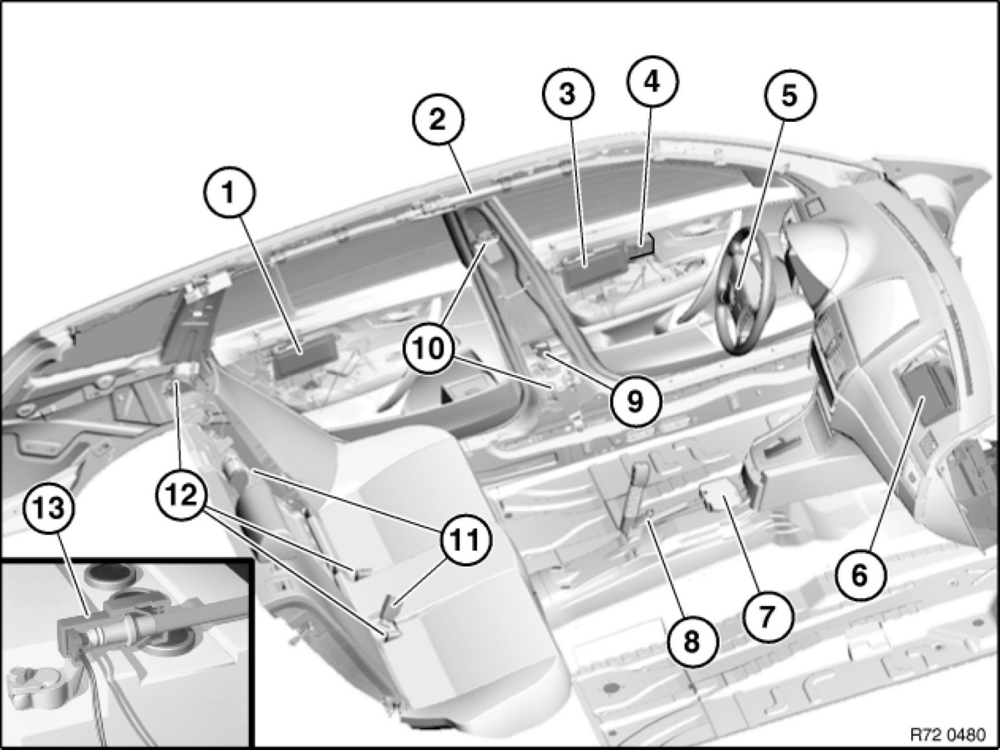
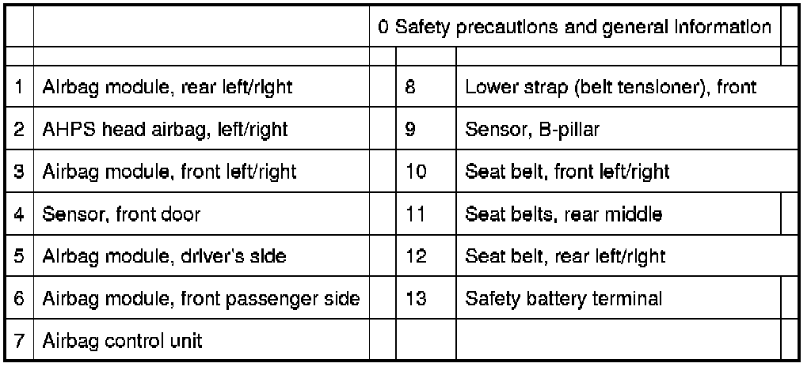

Operation CHARM
: Car repair manuals for everyone.
Home
>>
BMW
>>
2007
>>
X3 3.0si (E83) L6-3.0L (N52K)
>>
Repair and Diagnosis
>>
Sensors and Switches
>>
Sensors and Switches - Restraints and Safety Systems
>>
Impact Sensor
>>
Locations
>>
Overview of Airbag Modules, Seat Belts and Airbag Control Units
Overview of Airbag Modules, Seat Belts and Airbag Control Units
72 12 ... - Overview of airbag modules, seat belts and airbag control units

